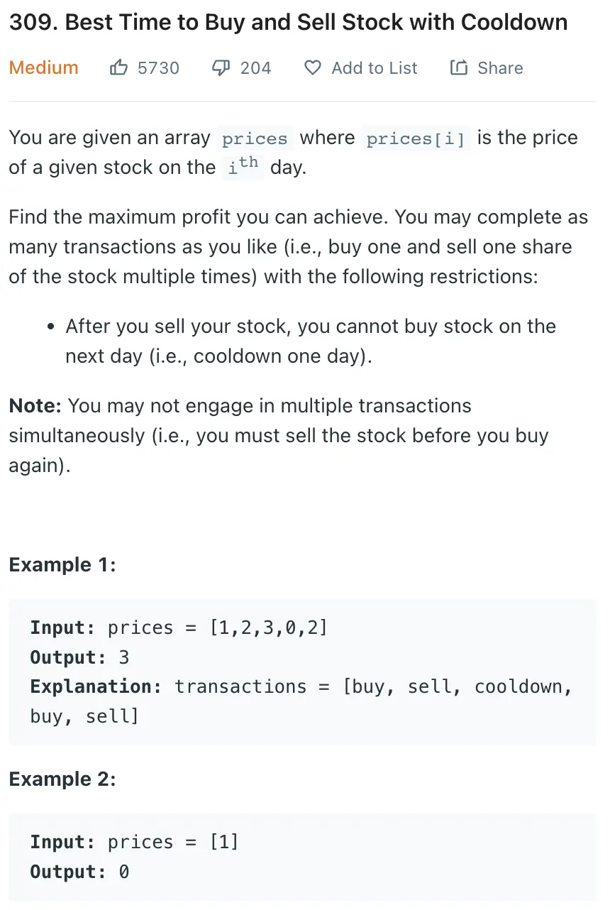
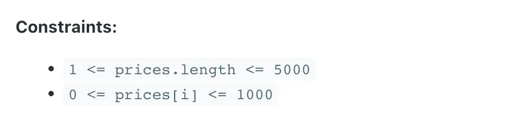

309. Best Time to Buy and Sell Stock with Cooldown
考過的公司：Asked by: Amazon
Question


✍🏽 My Solution
Runtime: 2 ms, faster than 45.00% of Java online submissions for Best Time to Buy and Sell Stock with Cooldown.
Memory Usage: 42.7 MB, less than 22.97% of Java online submissions for Best Time to Buy and Sell Stock with Cooldown.
class Solution {
public int maxProfit(int[] prices) {
if (prices == null || prices.length <= 1) return 0;
int n = prices.length;
if (n < 2) {
return 0;
}
int [][] dp = new int[n][2];
dp[0][0] = 0; // 第一天不買
dp[0][1] = -prices[0]; // 第一天買
dp[1][0] = Math.max(dp[0][0], dp[0][1] + prices[1]); // 無持有：1.繼續不買 2.昨天買今天賣賺的收益
dp[1][1] = Math.max(dp[0][1], -prices[1]); // 持有： 1.昨天有買，今天沒買 2.昨天沒買，今天第一次買
for (int i = 2; i < n; i++){
// 今天無持有：max(昨天沒股票, 昨天有股票今天賣出)
dp[i][0] = Math.max(dp[i-1][0], dp[i-1][1] + prices[i]);
// 今天持有：max(昨天也持有股票, 前天賣出股票 + cooldown後買入股票)
dp[i][1] = Math.max(dp[i-1][1], dp[i-2][0] - prices[i]);
}
return dp[n-1][0];
}
}
🧠 Thought Process
-
Why did I choose this particular implementation?
- 定義狀態：每天有兩種狀態，股票持有跟不持有
- 先給初始值第0天跟第1天：
- 第0天不買、第0天買
- 第1天不買、第1天買
-
從第2天開始循環，分成兩個狀態轉移方程
-
無持有：Math.max(dp[i-1][0], dp[i-1][1] + prices[i]);
max(昨天沒股票, 昨天有股票今天賣出) -
持有：Math.max(dp[i-1][1], dp[i-2][0] - prices[i]);
max(昨天也持有股票, 前天賣出股票 + cooldown後買入股票)
-
-
What is the time/space complexity of my solution? How do I know?
- time: O(n)
- space: O(m*n)
- What mistakes did I make?
- 沒有排除邊界條件 prices.length < 2 的情況
- 忘記設定basecase冷凍期